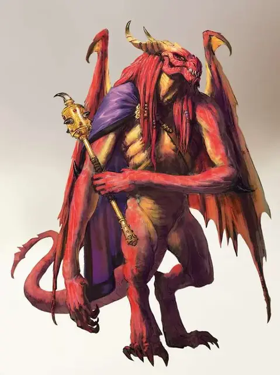

Красный абишай
Red Abishai
Среднее Исчадие (Дьявол), обычно законно-злое

Класс Доспеха 22 (природный доспех)
Хиты 289 (34к8 + 136)
Скорость 30 футов, летая 50 футов
| мод | спас | ||
|---|---|---|---|
| СИЛ | 23 | +6 | +12 |
| ЛОВ | 16 | +3 | +3 |
| ТЕЛ | 19 | +4 | +10 |
| мод | спас | ||
|---|---|---|---|
| ИНТ | 14 | +2 | +2 |
| МДР | 15 | +2 | +8 |
| ХАР | 19 | +4 | +4 |
Навыки Восприятие +8, Запугивание +10
Сопротивление урону холод; дробящий, колющий, рубящий от немагических атак, кроме нанесённых посеребрённым оружием
Иммунитет к урону огонь, яд
Иммунитет к состояниям испуг, отравление
Чувства тёмное зрение 120 футов, пассивное Восприятие 18
Языки Драконий, Инфернальный, Телепатия 120 фт.
Опасность 19 (22000 опыта)
Бонус мастерства +6
Среда обитания Город, Горы
Особенности
Дьявольское зрение. Магическая тьма не мешает тёмному зрению абишая.
Сопротивление магии. Абишай совершает с преимуществом спасброски от заклинаний и прочих магических эффектов.
Действия
Мультиатака. Абишай совершает одну атаку Укусом и одну Когтями, и он может использовать Ужасающее присутствие или Побуждение к фанатизму.
Укус. Рукопашная атака оружием: +12 к попаданию, досягаемость 5 фт., одна цель. Попадание: 22 (3к10+6) колющего урона + 38 (7к10) урона огнём.
Когти. Рукопашная атака оружием: + 12 к попаданию, досягаемость 5 фт., одна цель. Попадание: 17 (2к10+6) рубящего урона плюс 11 (2к10) урона огнём.
Ужасающее присутствие. Все существа на выбор абишая, находящиеся в пределах 120 футов от него и знающие о его присутствии, должны преуспеть в спасброске Мудрости Сл 18, иначе станут испуганными на 1 минуту. Существо может повторять этот спасбросок в конце каждого своего хода, оканчивая эффект на себе при успехе. Если спасбросок существа был успешным, или эффект на нём окончился, оно получает иммунитет к Ужасающему присутствию этого абишая на следующие 24 часа.
Побуждение к фанатизму. Абишай выбирает до четырёх своих союзников в пределах 60 футов от себя, которые могут его видеть. В течение 1 минуты каждый из этих союзников совершает броски атак с преимуществом и не может быть напуган.
Сила Королевы Драконов. Абишай нацеливается на одного дракона, которого он может видеть в пределах 120 футов от себя. Дракон должен совершить спасбросок Харизмы Сл 18. Цветной дракон совершает этот бросок с помехой. При успехе цель получаете иммунитет к Силе Королевы Драконов этого абишая в течение 1 часа. При провале цель становится очарованной абишаем в течение 1 часа. Очарованная таким образом цель относится к абишаю как к надежному другу, которого нужно оберегать и защищать. Этот эффект заканчивается, если абишай или его спутники наносят урон цели.
Описание
Каждый абишай когда-то был смертным, который каким-то образом завоевал милость Тиамат до своей смерти, и в качестве награды, его душа преобразовалась в отвратительного дьявола, чтобы служить ей в Девяти Преисподней.
Тиамат использует абишаев как агентов, отправляя их, чтобы представлять её интересы в Преисподней и по всей Мультивселенной. У некоторых простые задачи, такие как предоставление послания культистам или принятие на себя обязанностей, поклоняющихся выполнять чуждую миссию. Другие имеют более широкие обязанности, такие как ведение больших групп, убийство целей и участие в войсках. Во всех случаях абишаи фанатично лояльны к Тиамат, и при необходимости, готовыотдать свою жизнь.
Абишаи не входят в обычную иерархию Девяти Преисподней, имея свою собственную цепь командования, беспрекословно подчиняясь Тиамат (и Асмодею, когда тёмный лорд решает использовать их). Другие архидьяволы могут приказывать абишаям работать на них, но большинство из них редко делает это, так как никогда не ясно, выполняет ли абишай приказы Тиамат или Асмодея. Существует неотъемлемый риск того, что приказ, отданный Тиамат, может отмениться из-за вмешательства в планы Асмодея.
Красный Абишай. Красные абишаи не имеют себе равных среди остальных сородичей, когда дело доходит до лидерских способностей и грубой силы. Красные абишаи ведут других дьяволов в бой или присматривают за проблемными культами, чтобы они продолжали выполнять поручения Тиамат.
Красный абишай представляет собой ужасающую фигуру, и это зрелище может вдохновлять союзников абишая, наполняя их фанатичной готовностью сражаться.